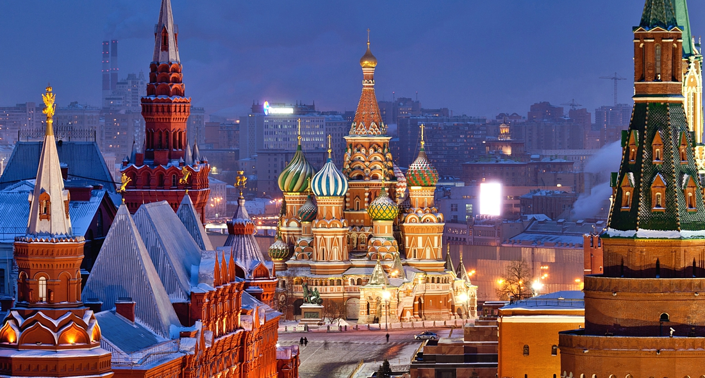

История России насчитывает более тысячи лет, начиная с переселения восточных славян на Восточно-Европейскую равнину в VI—VII веках, впоследствии разделившихся на русских, украинцев и белорусов[1]. История страны разделяется примерно на семь периодов: древнейший (догосударственный) (до конца IX века н. э.) период, период Киевской Руси (до середины XII века), период раздробленности (до начала XVI века), период единого Русского государства (с 1547 года — царства) (конец XV века — 1721), период Российской империи (1721—1917), советский период (1917—1991) и новейшая история (с 1991)[2].
Москва – столица Российской Федерации, самый крупный по численности населения город страны и один из десяти крупнейших городов мира. Она является центром Московской области, но сама в её состав не входит. Территориально Москва разделена на 12 административных округов, 125 районов и 21 поселение.
 Продолжение Статья России в wiki